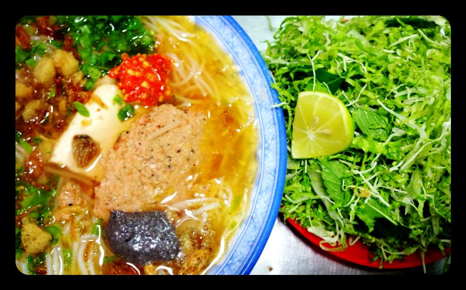

1. Bún Riêu Đoàn Kết:
Bún riêu ở đây nấu cực kỳ đơn giản, không màu mè và nhiều thứ khác như ở Sài Gòn. Chỉ có riêu tôm, tốp mỡ thôi; không có da heo, huyết,…đâu; gần đây mới thêm mấy miếng đậu hủ nữa. Ăn ở đây, mình khuyên là nên ăn rau sống.
Một tô như này chỉ có 15-17k thôi. Quán này nằm trong hẻm gần chỗ Oto Công Thành (đối diện Biti’s, trên đường Nguyễn Tất Thành), cứ chạy thẳng vào sẽ thấy một dãy xe đang xếp ở đó.
2. Bún bò Huế – bún giò – bún chìa:
Đây cũng là một món mà mình ít khi bỏ lỡ khi về BMT. Nước cay vừa đủ, thịt thì ôi thôi…to, mềm, ngọt nước. Ăn kèm rau sống nữa, vừa ăn vừa suýt xoa vì vừa nóng hổi, vừa cay nồng.

Nếu bạn sợ giò/chìa là quá nhiều với bạn, hãy order bún bò tái. Cũng ngon không kém, bò mềm và ngọt thịt lắm. Giá tầm 40k. Mình thường ăn ở quán Bún Bò trên YBih Aleo, ở góc đường Lê Thánh Tôn – Ngô Đức Kế
3. Bún thịt nướng
Nói đến món này thì đến Bún thịt nướng Bà Cam, nằm trên con đường Dương Văn Nga, gần cuối đường Mai Hắc Đế. Một lựa chọn thay thế khác là bún Thịt nướng ở trên đường Điện Biên Phủ, gần đoạn giao với Phan Bội Châu, Gần đó có một ngôi chùa. Chỗ này cũng đáng để bạn ăn thử áh, ngon, ngay gần trung tâm thành phố, không quá đông.